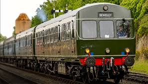
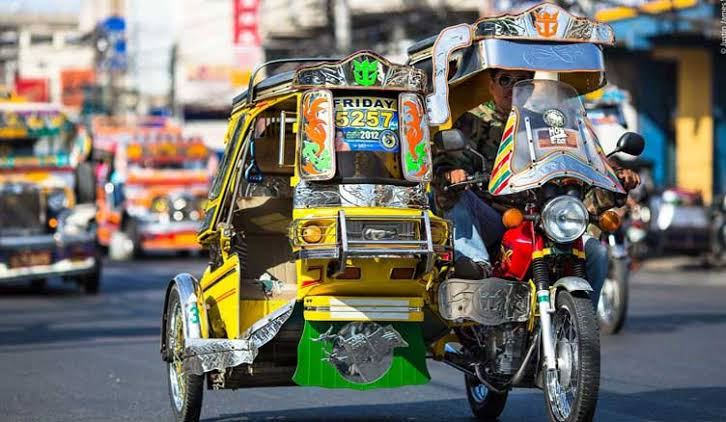

Common options
Different transportation options serve different routes and needs. Availability, accessibility, fares, and operating arrangements vary by location.
-
Jeepneys – a familiar public utility vehicle in many communities.

-
Buses – serve city, provincial, and longer-distance routes.

-
Trains – provide rail services in areas with operating rail systems.

-
Tricycles – often provide local or last-mile trips where permitted.

- Walking and cycling – useful for short trips when routes are safe and suitable.